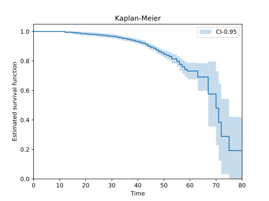
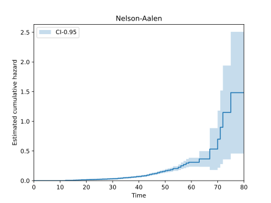

2.3. Non-parametric lifetime models#
Before fitting a parametric distribution, it’s often useful to estimate the survival or
hazard function directly from the data, without assuming any particular shape. AssetLife
provides two censoring-aware estimators for this, Kaplan-Meier and Nelson-Aalen. Both take the event and
entry arguments and therefore account for right censoring and left truncation (see
Censoring and truncation).
Both estimators share the same idea. Index the units of the dataset by \(j\), so that unit \(j\) is observed on \([\textrm{entry}_j, \textrm{time}_j]\), and write \(t_1 < t_2 < \dots < t_n\) for the ordered distinct observed times, \(d_i\) for the number of failures recorded at \(t_i\), and \(n_i\) for the number of units at risk just prior to \(t_i\), that is the units already entered and not yet failed or censored:
Censoring and truncation only enter through these two counts: a censored unit contributes to \(n_i\) up to the time it was last seen but never to \(d_i\), and a left-truncated unit only starts contributing to \(n_i\) once it enters the observation window.
2.3.1. Kaplan-Meier: survival function#
The Kaplan-Meier (product-limit) estimator reads each observed failure time as a conditional probability of surviving that instant, \(1 - d_i/n_i\), and multiplies them along the timeline:
The estimate is a step function that drops only where a failure was actually observed and stays flat everywhere else, so censored units never push the curve down:
(Source code, svg)


The shaded band is a 95% confidence interval. It widens along the timeline because fewer and fewer assets remain at risk, so the tail of the curve rests on very few observations. The curve drops to zero only if the longest observed time is an event, i.e. every asset still at risk at that age had the event. If the longest observed time is censored, the curve stops above zero: the oldest assets were last seen at that age without the event, and the estimator says nothing about survival beyond it.
2.3.2. Nelson-Aalen: cumulative hazard#
The Nelson-Aalen estimator targets the cumulative hazard function \(H(t)\) instead of the survival function. Where Kaplan-Meier multiplies survival probabilities, Nelson-Aalen accumulates failure rates:
Being a sum of non-negative increments, the estimate increases with time. Its slope is the hazard rate: a steepening curve means the units are wearing out.
(Source code, svg)


These estimators are a good sanity check before committing to a parametric shape (see Parametric distributions): if a fitted distribution’s survival curve strays far from the Kaplan-Meier estimate, that shape is probably a poor fit for the data.